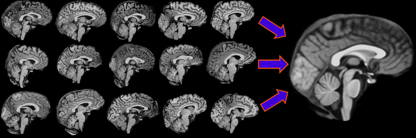
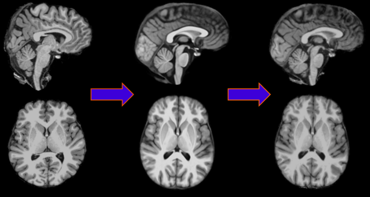

ANTS stands for Advanced Normalization Tools and is a very good software package that provides advanced tools for normalizing neuroimages, hence the name. It isn’t yet integrated into Nipype. So why should you care? Why not just normalize to a template from SPM, FreeSurfer or FSL?

Well if you look at the four normtemplates above it becomes quite obvious. From left to right are shown a MNI Talairach template from SPM, FreeSurfer and FSL. The fourth on the richt is an ANTS template made from 15 individual subject images. The normtemplate created from ANTS does not just look nicer, it is also important to know that the closer your normalization template is to your subject data the better!!! So the question turns to: Why aren’t you using ANTS?
Now that I hopefully have convinced you of the benefits of ANTS I will also show you where to get it. Actually, it’s quite simple. Either go to the download section on the ANTS homepage or on a Linux system just download it in the software center. After that: you’re good to go!
In this user guide we will be using ANTS to execute the following three tasks:
Create a normtemplate out of anatomical images
On the left you can see 15 individual anatomical images in subject space. ANTS built in 24 hours an awesome normtemplate out of them, shown on the right.
Normalize your anatomical images to a normtemplate
ANTS takes an anatomical image in subject space (left), normalizes it to a normtemplate (middle) and produces a subject specific anatomical image in template space (right), which looks actually just like the normtemplate. But the important output of this procedure is that ANTS stores the transformation data. This allows to transform anything of this subject from subject into template space.
Normalize your functional images to a normtemplate

On the right you can see anatomical and functional data of a subject in subject space and on the right the same data in template space.
Note
Of course there is much more more that ANTS can offer than this. Normalizing your DTI data, project an area from your normtemplate (e.g. hippocampus) back into subject space or how to handle images of subjects with severe neurodegeneration. And the depth to which you can parameterize your normalization is too big to be covered in this beginner’s guide. So for more detailed explanation to the algorithms and for a wider knowledge about ANTS, please visit the ANTS homepage.
Because the ANTS homepage already covers the basic knowledge very well, I more or less copied the content of this subsection from there, but still tried to summarize it to a short overview.
ANTS can deal with 2D and 3D images and handle the following four data types:
There are two general applications of image registration:
The second way of image registration will also be what we will cover in this guide. The main challenge in image and brain mapping is defining the way in which images/anatomy are compared. There are two components to the comparison:
ANTS provides a hierarchy of transformations with adjustable levels of complexity, regularization, degrees of freedom and behavior as optimizers. The simplest transformation model is the rigid and affine transform. The most complex and most flexible is a symmetric diffeomorphic transformation based on optimizing and integrating a time-varying velocity field. Computation time also increases with transformation model complexity, but most normalization needs may be met with under an hour of computation.
Note
More information to affine, rigid, deformable registration and diffeomorphic transformations can be found at 2.2 ANTS Transformation Models in the ants.pdf which can be found on the ANTS homepage.
As always, before we can start writing the scripts we have to know what they actually do. For the tasks we want to cover in this user’s guide we need to understand the following three scripts:
Note
If you don’t want to know what the scripts do and you just want to use the default mode, skip this subsection. But as a result your normalization might not be the best one.
buildtemplateparallel.sh will make a template out of the input files we provide. This script builds a template iteratively and takes a long time to compute (e.g. for 8 iterations of 10-15 subjects using 4 cores you should expect 20h-30h computation time). Let’s now look at the command, the arguments and the output of the script.
bash ~PATHTOANTS/buildtemplateparallel.sh -d ImageDimension -o OUTPREFIX <other options> <images>
-c Control for parallel computation. 0 = run serially, 1 = use SGE qsub, 2 = use PEXEC
-g Gradient step size; smaller in magnitude results in more cautious steps
-i Iteration limit for template construction
-j Number of CPU cores to use
-n N3BiasFieldCorrection of moving image (0 = off; 1 = on)
-r Do rigid-body registration of inputs before creating template (0 = off, 1 = on). Only useful when you do not have an initial template.
-z Use this this volume as the target of all inputs. When not used, the script will create an unbiased starting point by averaging all inputs.
Note
This information can also be seen by using the command bash buildtemplateparallel.sh --help.
buildtemplateparallel.sh actually uses both other scripts antsIntroduction.sh (to create the needed input for WarpImageMultiTransform) and WarpImageMultiTransform (to map images from one space into another) to execute. The outcome stabilizes at around ten images and 8 iterations for most populations.
This script generates a lot of output considering that we are only interested in one output, the normtemplate. In the folder where you are running the script, additional folders will be created during execution, one for each iteration. The name for the folder with the result of the first iteration is called GR_iteration_0 if your transformation model is GR and the folder of the forth iteration is called GR_iteration_3. Each of this folder contains the output of the antsIntroduction.sh script for each subject AND for the normtemplate.
Additionally to this folders the output of the current iteration level will be stored in the folder where you are running the script. So for two iterations with two subjects (s1 and s2) and a Prefix=PRE, the output of buildtemplateparallel.sh would be:
The normtemplate you wanted to be build will be at the highest iteration level, in this case at ~PATHTOEXECUTIONFOLDER/GR_iteration_1/PREtemplate.nii.gz
Important
Because this script generates a lot of output be sure to delete everything you don’t need!! One subject file of 16MB creates around 150MB output per iteration, leaving you with 12GB for 10 subjects and 8 iterations.
antsIntroduction.sh will perform an elastic or diffeomorphic transformation of the moving image space into the fixed image space. Let’s now look at the command, the arguments and the output of the script.
bash ~PATHTOANTS/antsIntroduction.sh -d ImageDimension -r fixed.ext -i moving.ext <other options>
-f Force script to proceed even if headers may be incompatible (0 = no, 1 = yes). ANTS will perform a basic header sanity check. If you want to trust it, use -f 0.
-l Labels-In-Fixed-Image-Space-To-Deform-To-Moving-Image. This maps a template labeled image to the target space. For instance for template-based segmentation. Applies the inverse warp to the labels to estimate the label positions in target space.
-m the same as in buildtemplateparallel.sh
-n the same as in buildtemplateparallel.sh
-o the same as in buildtemplateparallel.sh
-s the same as in buildtemplateparallel.sh
Note
This information can also be seen by using the command bash antsIntroduction.sh --help.
The names and formats of the output files are both specified by -o option. For example, for in 3D with -o Prefix_.nii.gz, the output files are:
They can be categorized into:
Note
It is important to note that Prefix_Affine.txt, Prefix_Warpxvec.nii.gz, Prefix_Warpyvec.nii.gz, Prefix_Warpzvec.nii.gz, Prefix_deformed.nii.gz are needed for the execution of WarpImageMultiTransform
Actually both buildtemplateparallel.sh and antsIntroduction.sh use WarpImageMultiTransform during execution to warp an image (a so called moving image) from one space into a another space (a so called fixed space), in general a template space. Let’s now look at the command, the arguments and the output of the script.
WarpImageMultiTransform ImageDimension moving_image output_image -R reference_image SeriesOfTransformations <other options>
SeriesOfTransformations WarpImageMultiTransform can apply, via concatenation, an unlimited number of transformations to your data. Thus, SeriesOfTransformations may be an Affine transform followed by a warp another affine and then another warp. For example mapping a warped image into the reference_image domain by applying abcdWarpxvec.nii.gz/abcdWarpyvec.nii.gz/abcdWarpzvec.nii.gz and then abcdAffine.txt would need the following code:
WarpImageMultiTransform 3 moving_image output_image -R reference_image abcdWarp.nii.gz abcdAffine.txt
–use-NN Use Nearest Neighbor Interpolation
–use-BSpline Use 3rd order B-Spline Interpolation.
-i will use the inversion of the following affine transform.
Note
This information can also be seen by using the command WarpImageMultiTransform --help.
WarpImageMultiTransform does only create one output file with the name specified by output_image. But to execute, it also needs the following five files: Affine.txt, Warpxvec.nii.gz, Warpyvec.nii.gz, Warpzvec.nii.gz and deformed.nii.gz
Before we can use any other ANTS script we first have to create the normtemplate. So let’s start building the script that executes buildtemplateparallel.sh.
As always, let us first set the environment and everything else up, so that the script can actually run and use ANTS.
1 2 3 4 5 | #!/bin/bash
#specify where ANTS is installed
export PATH=/software/ANTS:$PATH
export ANTSPATH=/software/ANTS/
|
Now let us specify all the parameters we might want to change from run to run.
1 2 3 4 5 6 7 8 9 10 11 12 13 14 15 16 17 18 19 20 21 22 23 24 | #specify list of subjects
subjectList='subject1 subject2 subject3'
#specify folder names
experimentDir=~SOMEPATH/experiment #parent folder
inputDir=$experimentDir/AnatomicalImages #folder containing anatomical images
normtempOutDir=$experimentDir/data #where the normtemp should be stored at
workingDir=$experimentDir/normtemp_workingDir #temporary dir
#specify parameters for buildtemplateparallel.sh
#compulsory arguments
ImageDimension=3
OutPrefix='PREFIX'
#optional arguments
ParallelMode=2
GradientStep='0.25'
IterationLimit=4
Cores=2
MaxIteration=30x90x20
N3Correct=1
Rigid=0
MetricType='PR'
TransformationType='GR'
|
After all preparations are done, let us now write the main script.
1 2 3 4 5 6 7 8 9 10 11 12 13 14 15 16 17 18 | #If not created yet, let's create a new output folder
if [ ! -d $workingDir ]
then
mkdir -p $workingDir
fi
#go into the folder where the script should be run
cd $workingDir
#Let's get the input, the subject specific anatomical images. You might
# have to alter this part a bit to satisfy the structure of your system
#Assuming that the name of your subject specific anatomical image is
# 'subjectname.nii' the loop to grab the files would look something like this
for subj in $subjectList
do
cp $inputDir/$subj.nii $workingDir/$subj"_antsT1.nii"
done #subj done
|
Note
If you want to use your skull stripped freesurfer_data, use the following loop instead of the code above. Assuming that inputDir=$experimentDir/freesurfer_data is specified.
1 2 3 4 5 6 7 8 9 10 11 12 | #Add this code at the beginning of your script,
# after the specification to where ANTS is installed
export FREESURFER_HOME=/software/Freesurfer/5.1.0
source $FREESURFER_HOME/SetUpFreeSurfer.sh
#This loop grabs your skull stripped anatomical files from your freesurfer folder
for subj in $subjectList
do
cmd="mri_convert $inputDir/$subj/mri/brain.mgz $workingDir/$subj_antsT1.nii"
echo $cmd #state the command
eval $cmd #execute the command
done #subj done
|
Now that everything is set up we can call buildtemplateparallel.sh.
1 2 3 4 5 6 7 | #assemble the command for the script from the input parameters defined above
cmd="bash $ANTSPATH/buildtemplateparallel.sh -d $ImageDimension -c $ParallelMode \
-g $GradientStep -i $IterationLimit -j $Cores -m $MaxIteration -n $N3Correct \
-r $Rigid -s $MetricType -t $TransformationType -o $OutPrefix *_antsT1.nii"
echo $cmd #state the command
eval $cmd #execute the command
|
Important
If you are running buildtemplateparallel.sh in parallel it is very important to know that if you abort the execution or if it crashes by itself, be sure that all jobs are actually terminated. This is very important because if you don’t you probably will overload your system pretty fast. So if you run it with...
Now that everything is done you can run the script from the terminal with bash ANTScreateNormtemp.sh and wait till it’s done.
Hint
The code for the creation of normtemplate out of your anatomical images can be found here: ANTScreateNormtemp.sh
This part is optional, but because buildtemplateparallel creates a lot of output it is highly recommended to delete everything else than the normtemplate that you actually wanted.
1 2 3 4 5 6 7 8 9 | #move the normtemplate to a safe place
lastIterationFolder=${TransformationType}_iteration_$(($IterationLimit-1))
cmd="mv $workingDir/$lastIterationFolder/${OutPrefix}template.nii.gz \
$normtempOutDir/normtemp.nii.gz"
echo $cmd #state the command
eval $cmd #execute the command
#delete the workingdir
rm -rf $workingDir
|
Now that we have created a normtemplate, we are ready to normalize images from subject space into the normtemplate space. First we will write a script that uses antsIntroduction.sh to normalize anatomical images.
1 2 3 4 5 | #!/bin/bash
#specify where ANTS is installed
export PATH=/software/ANTS:$PATH
export ANTSPATH=/software/ANTS/
|
1 2 3 4 5 6 7 8 9 10 11 12 13 14 15 16 17 18 19 20 21 22 | #specify list of subjects
subjectList='subject1 subject2 subject3'
#specify folder names
experimentDir=~SOMEPATH/experiment #parent folder
inputDir=$experimentDir/AnatomicalImages #folder containing anatomical images
templateName=$experimentDir/data/normtemp.nii.gz #path to and name of normtemplate
normAnatOutDir=$experimentDir/normAnat #outputdir of normalized T1 files
#specify parameters for antsIntroduction.sh
#compulsory arguments
ImageDimension=3
OutPrefix=''
ReferenceImage=$templateName
#optional arguments
IgnoreHDRWarning=1
MaxIteration=30x90x20
N3Correct=0
QualityCheck=0
MetricType='PR'
TransformationType='GR'
|
In this script we also want to have the option to specify if already existing output files should be overwritten or not. This is useful if you had to abort an earlier run.
1 2 | #Do you want to overwrite existing output files? (1 = yes, 0 = no)
overwrite=0
|
1 2 3 4 5 6 7 8 9 10 11 12 13 14 15 16 17 18 19 20 21 22 23 24 25 26 27 28 29 | #If not created yet, let's create a new output folder
if [ ! -d $normAnatOutDir ]
then
mkdir -p $normAnatOutDir
fi
#go into the folder where the script should be run
cd $normAnatOutDir
#go through all subjects
for subj in $subjectList
do
#if anatomy of the subject wasn't normalized yet or if overwrite was set to 1=yes
# the antsIntroduction script gets executed
if [ ! -e $normAnatOutDir/$OutPrefix$subj"deformed.nii.gz" ] || [ $overwrite == 1 ]
then
#assemble the command for the script from the input parameters defined above
cmd="bash $ANTSPATH/antsIntroduction.sh -d $ImageDimension -r $ReferenceImage \
-i $inputDir/$subj.nii -o $normAnatOutDir/$OutPrefix$subj \
-f $IgnoreHDRWarning -m $MaxIteration -n $N3Correct -q $QualityCheck \
-s $MetricType -t $TransformationType"
echo $cmd #state the command
eval $cmd #execute the command
else
echo -e "NOTICE: ${OutPrefix}${subj}deformed.nii.gz does already exist! \
Skipping to next subject."
fi
done #subj done
|
Now that everything is done you can run the script from the terminal with bash ANTSnormalizeAnat.sh and wait till it’s done.
Hint
The code for the normalization of your anatomical images to a normtemplate can be found here: ANTSnormalizeAnat.sh
This part is optional, but again highly recommended. antsIntroduction.sh creates for each subject file of 16MB an output of 140MB. So after you’ve used the output of this script for the normalization of your functional data, be sure to delete it.
The script will create additional output that you best delete manually. Specifically at the location of your fixed image (e.g. normtemplate) an inverse version of the normtemplate and at the location of your moving image (e.g. subject anatomy) a cfg-file with the name of the subject anatomy name can be found.
After antsIntroduction.sh has created the necessary output for the normalization of the functional data, we are ready to write the script that uses WarpImageMultiTransform.
1 2 3 4 5 6 7 8 9 | #!/bin/bash
#specify where ANTS is installed
export PATH=/software/ANTS:$PATH
export ANTSPATH=/software/ANTS/
#specify where FreeSurfer is installed
export FREESURFER_HOME=/software/Freesurfer/5.1.0
source $FREESURFER_HOME/SetUpFreeSurfer.sh
|
The setting of the FreeSurfer environment is needed for the usage of mri_convert later on.
1 2 3 4 5 6 7 8 9 10 11 12 13 14 15 | #specify list of subjects
subjectList='subject1 subject2 subject3'
#specify list of contrasts. (empty = all contrasts will be normalized
contrastList=''
#specify folder names
experimentDir=~SOMEPATH/experiment #parent folder
inputDir=$experimentDir/result/vol_contrasts #folder containing functional images
templateName=$experimentDir/data/normtemp.nii.gz #path to and name of normtemplate
normAnatDir=$experimentDir/normAnat #outputdir of normalized T1 images
funcOutDir=$inputDir #outputdir of normalized functional images
#Do you want to overwrite existing output files? (1 = yes, 0 = no)
overwrite=0
|
1 2 3 4 5 6 7 8 9 10 11 12 13 14 15 16 17 18 19 20 21 22 23 24 25 26 27 28 29 30 31 32 33 34 35 36 37 38 39 | #If not created yet, let's create a new output folder
if [ ! -d $funcOutDir ]
then
mkdir -p ${funcOutDir}
fi
#go through all subjects
for subj in $subjectList
do
#If not created yet, let's create a subject specific folder
if [ ! -d $funcOutDir/$subj ]
then
mkdir ${funcOutDir}/${subj}
fi
#If not created yet, let's create a folder for the normalized cons
if [ ! -d $funcOutDir/$subj/normcons ]
then
mkdir -p $funcOutDir/$subj/normcons
fi
#If not created yet, let's create a folder for the normalized spmTs
if [ ! -d $funcOutDir/$subj/normspmTs ]
then
mkdir -p $funcOutDir/$subj/normspmTs
fi
#checks if all necessary output of antsIntroduction.sh exists
if [ ! -e $normAnatDir/${subj}deformed.nii.gz ] ||
[ ! -e $normAnatDir/${subj}Warpxvec.nii.gz ] ||
[ ! -e $normAnatDir/${subj}Warpyvec.nii.gz ] ||
[ ! -e $normAnatDir/${subj}Warpzvec.nii.gz ] ||
[ ! -e $normAnatDir/${subj}Affine.txt ]
then
echo -e "NOTICE: A necessary ANTS output file of subject ${subj} was not found.\
Skipping to next subject."
continue
fi
|
Now we need to know which contrasts we want to normalize. If you have specified a list above, the following part will be skipped, but if it was left empty = '' this code will create a list containing the numbers numbers of all contrasts stored in inputDir.
1 2 3 4 5 6 7 8 9 10 11 12 13 14 | #create a list that contains numbers of contrasts if not specified above
if [ $contrastList=='' ]
then
contrast=`ls $inputDir/$subj/con_*.img`
con_ID=''
for con in $contrast
do
length=${#con}
ID=`echo $con | cut -c $(($length-7))-$(($length-4))`
con_ID=${con_ID}' '$ID
done #con done
else
con_ID=$contrastList
fi
|
Now that con_ID has a value like '0001 0002 0003' we are ready to go through the specified contrasts and normalize them.
1 2 3 4 5 6 7 8 9 10 11 12 13 14 15 16 17 18 19 20 21 22 23 24 25 26 27 28 29 30 31 32 33 34 35 36 37 38 39 40 41 | #go through all contrasts
for ID in $con_ID
do
#to normalize 'con' and 'spmT' files
for type in con spmT
do
#specify input image and name of normalized output image
InImg=$inputDir/$subj/${type}"_"${ID}.img
OutNii=$funcOutDir/$subj/norm${type}"s/ants_"${type}"_"${ID}.nii
#checks if input image exists
if [ ! -e $InImg ]
then
echo -e "NOTICE: Cannot find ${type}_${ID}.img of subject ${subj}"
continue
fi
#contrast will be normalized if contrast wasn't normalized yet
# or if overwrite was set to 1=yes
if [ ! -e $OutNii ] || [ $overwrite == 1 ]
then
#assemble the command for the conversion of img to nii
cmd1="mri_convert "${InImg}" "${OutNii}
#assemble the command for the normalization
cmd2="WarpImageMultiTransform 3 ${OutNii} ${OutNii} \
-R $normAnatDir/${subj}deformed.nii.gz \
$normAnatDir/${subj}Warp.nii.gz \
$normAnatDir/${subj}Affine.txt"
eval $cmd1 #execute cmd1
eval $cmd2 #execute cmd2
else
echo -e "NOTICE: ${OutNii} already exists. Skipping to next contrast."
fi
done #type done
done #ID done
done #subj done
|
Now that everything is done you can run the script from the terminal with bash ANTSnormalizeFunc.sh and wait till it’s done.
Hint
The code for the normalization of your functional images to a normtemplate can be found here: ANTSnormalizeFunc.sh
Luckily this script doesn’t create any kind of waste. But as said before, if you know that you don’t need the output of antsIntroduction.sh make sure to delete it and free some space.